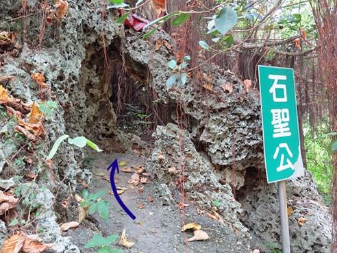

【銅板旅遊清水巖探險之旅】 |
| 清水寺(巖) | |
| 連絡電話 | (07)641_2511 |
| 活動內容 | 08:00魔力清水寺外集合 8:10到清水巖文龍磐石 8:15～8:20太公垂釣 8:30~8:40崗哨亭 8:50~10:50神秘龍蟠洞 必去景點!! 11:00~11:15喝個水，上個廁所，準備繼續出發 11:20~11:35考驗猴鰓雷的眼力 尋找日治時期遺址碎片 11:50~13:30補充體力!!休息一下，吃午餐 13:40返回清水巖 13:45繼續往上爬!! 14:00~15:30到唐榮墓園散步走走 15:30忠孝亭集合，喝水 15:40準備下山，走石頭步道 16:20賦歸溫暖的家～期待再相會～ |
| 清水巖簡介 | 簡介:高雄八景之一，景色天成，美不勝收 清水巖風景區由多達26處景點組成，最主要的景點是清水寺，廟宇莊嚴清幽，山麓有泉水自石灰岩形成的奇石中湧出，水質清澄，用來泡茶風味絕佳。在攀岩賞泉之外，海象地景形成造型豐富的岩石景觀，以及生長在岩石上的長壽茄冬，尤其令人讚嘆和珍惜，自古以來即列為高雄八景之一，是源遠流長的寶貴自然資產。 |
| 地址 | 高雄縣林園鄉林園北路179號 |
| 清水巖名字由來 | 高雄縣南邊有座石灰岩方山，是由隆起珊瑚礁石灰岩地質構成，平均海拔高度不到50公尺，稱為鳳山丘陵。山麓有伏流泉水從石頭中湧出，水量充沛，即使乾旱季節也不乾涸，灌溉數百畝良田，水質極為清澄，因此命名為清水巖。 |
| 交通資訊 | 方法一：如果要前往清水巖風景區，可在高雄火車站搭乘高雄客運101號班車，至清水巖路口站下車，步行約20分鐘即可到達。 方法二：自行開車可從第1高速公路終點接17號省道，南行至林園鄉，過頂厝橋左轉東林西路，再接林園北路前行，即可見到清水寺牌樓，穿過牌樓即抵達。 |
| 貼心小導覽 | 高雄縣南邊有座石灰岩方山，是由隆起珊瑚礁石灰岩地質構成，平均海拔高度不到50公尺，稱為鳳山丘陵。 山麓有伏流泉水從石頭中湧出，水量充沛，即使乾旱季節也不乾涸，灌溉數百畝良田，水質極為清晰，因此命名為清水巖。 清水巖東南靠海平原，在鄭成功王朝時期，已有先民前往開墾，稱為林園庄，也就是現在的林園鄉。 登上清水巖放眼太平洋，隱約可見小琉球和恆春大武諸山，林園鄉更是盡收眼底。 清水巖在清朝道光年間即築已有寺廟，為簡陋的庵，歷次多次重修，建築古色古香，台灣脫離日本殖民統治光復後，稱為清水寺，再經多次整修，已成為寺宇莊嚴，清靜幽美的佛寺。 |
| 集合囉！ 清水巖拱門 |
|
| 我們先去第一站吧 第一站是甚麼? 看一下地圖吧! 清水巖導覽地圖 |
|
| 那我們先去看文龍磐石吧！ 哇!有人在釣魚欸 話說這叫文龍磐石，那龍呢? 文龍磐石 在這! 文龍蟠石上的石頭也是自然形成的喔! |
|
| 接下來往樓梯上去，能看到太公在垂釣了！ 太公垂釣 太公真的在垂釣呢，好悠閒喔! |
|
哇!是涼亭ㄟ 這名字好有好有意境  流芳亭 流芳亭可以供應來參觀清水巖的人休息，泡茶聊天。 |
|
| 流芳亭旁的土地公廟 來這裡拜拜，拜個身體健康.萬事如意 祈求新的一年平平安安地過 |
|
| 哇!是廢棄的崗哨亭ㄟ 這裡保有好多日治時期留下來的東西。 想來這邊玩玩看!! 一定很刺激 在那邊假裝站崗，拍照 |
|
| 好多阿公阿嬤喔 都在這裡聊天唱歌 貼心小提醒:為了不打擾別人，唱到11:10而已喔! |
|
| 趁這個時間，快去爬龍蟠洞吧!! 龍蟠洞 必去地點TOP1 大推!! (貼心小提醒，記得帶手電筒和薄外套喔) (盡量約導遊，可以一起聽介紹，也不會迷路喔) |
|
| 哇! 是大型會議室欸 來開個小小會議吧！ 大型會議室 裡面真的好大，可以去像以前的軍人在裡面開會的樣子，有機會快去體驗!! |
|
| 出洞後，順便來去看日治時期留下來的碎片 導遊手上拿的就是日治時期殘留下來的遺骸 (!!!請注意:如果有看到，請勿把遺骸碎片帶回家喔，否則考古學家會以為那裡有以前的遺骸。) 必去地點TOP3 很有歷史風味~ |
|
| 午餐在煩惱吃甚麼嗎? 就到林園是去吃平凡.美味.平價的鴨肉 蘭姐鴨肉飯 地址:高雄市林園區文化街102號 電話:07-643-1563 這間店已有90年歷史喔!!! |
|
| 唐榮公園裡面很乾淨喔! 所以不要在裡面丟垃圾!! ↑ 唐榮公園入口 ↑ 唐榮先生之子唐傳宗為紀念其父親而興建的「報恩樓」 ↑ 唐榮公園步道 ↑ 公園內遍植椰子樹、水果樹及奇花 異卉，並派有專人管理，環境十分幽靜。 考完試或工作壓力大的時候可以到這裡走走，散散心 是個休憩的好所在 必去地點TOP2 ↑ 唐榮先生之子唐傳宗長眠之地  ↑ 唐榮公園 -「小羊跪乳」塑像 這讓我想到24孝的故事 讓人感動 唐榮墓園 - 「四勿」 非禮勿視(解1)，非禮勿言(解2)，非禮勿聽(解3)，非禮勿動(解4) 解1不合禮義的事物不去看它 解2不合禮義的意見不去說它 解3不合禮義的言語不去聽它 解4不合禮義的行為不去做 ↑ 唐榮公園 - 忠孝亭 累了在這坐一下吧 ↑ 唐榮公園 - 「烏鴉反哺」塑像 唐榮墓園 《唐榮墓園小知識》：唐榮(1880年11月26日－1963年3月5日)，台灣企業家，生於福建晉江，1896年渡台，1940年創立唐榮鐵工所(戰後改稱唐榮鐵工廠)，為一民營企業，董事長為唐榮，總經理為其子唐傳宗，到民國37年日產鋼鐵二百噸，終於在台灣鋼鐵界中揚名。曾經是台灣最具規模的鋼鐵廠，並獲有「南唐榮北大同」之榮稱，譽重一時。民國46年改組為股份有限公司，父子檔協同戮力，並進行多角化經營，曾經擁有四千多員工，執台灣鋼鐵業牛耳，成為高雄早期鋼鐵業翹楚。 戰後遭到政治橫禍，二二八事件(1947年)發生，唐榮被檢舉因南部的日本海軍將鋼材賣給了唐榮鐵工廠。唐傳宗被捕，工廠被沒收。其後雖平反發還工廠，但因走陳誠路線，在陳誠晚年及其身故後橫遭政治鬥爭，公司房地廠房無法獲得台銀資金挹注，以致唐榮企業垮台，被當時政府接管改組。實際上,1960-1965年擔任副總統並於1963年兼任經發會主委，唐榮集團因擴充事業版圖太快，以高利向民間借貸，又逢越戰危機，導致融資困難，民國51年2月唐榮鐵工廠股份有限公司改組為省營事業機構，民國52年3月5日唐董事長榮因鬱而終，享年84歲，安葬於高雄市林園區清水巖風景區後方唐榮公園。 墓陶臺 在清水巖風景區上方，有一處造型簡潔且規模不大的墓園，慕陶臺。此墓主人是許寸金，字慕陶，曾留學日本得到文學及醫學博士，所以能醫能文，著有「慕陶小輯」  ↑ 清水巖風景區，景觀視野非常好，風景十分漂亮，可遠眺林園區。 ↑中山崗 在桃源一洞上方，建有中山崗 (為立法委員吳基福先生為紀念 國父孫中山先生與謀遊客憩息方便而建) ↑ 一傘亭 ↑ 一傘亭的景觀視野 ↑ 清水巖風景區 - 怡然橋 這裡拍照很美喔!!!  昔日因海潮侵蝕而成的珊瑚礁洞穴 ─ 桃源一洞。 裡面還具備石椅，石桌步道 悠閒的步道 有沒有像電視劇的場景呢? 因海水沖刷所造成的石頭步道。 ↑ 清水巖風景區內設有許多公共廁所，方便遊客們使用。 石聖公  ↑ 穿過此洞，保佑平安+升官發財+萬事如意+心想事成... 快來!!! ↑ 廢棄碉堡 哇!是碉堡ㄟ 能進去走走看! 三腳蟾蜍 這也是由海水和風長期侵蝕而成的 他有像青蛙嗎?(呱呱呱~) ↑ 陽明橋 ↑ 觀音馴鰲 阿彌陀佛 ↑ 水簾洞 孫悟空欸 看我的金窟棒 ↑ 午睡鴟鵂(貓頭鷹) 發揮你的想像力吧! ↑ 念佛洞 ↑ 黃占岸先生銅像 ↑ 黃占岸先生誌 ↑ 長壽茄苳，清水寺後方之老茄苳樹，枝葉茂盛，樹齡推估約有160年了，樹的胸圍有3.5 公尺。都比我爺爺老了呢! ↑ 五常岩 下午4點在這結束行程跟解散 清水巖是個好地方 但不要亂丟垃圾喔! 祝大家旅遊愉快，平安快樂 圖片來源: 郭耀元老師拍攝 BYE BYE~~~ 幸福潮中工作團隊 |
|